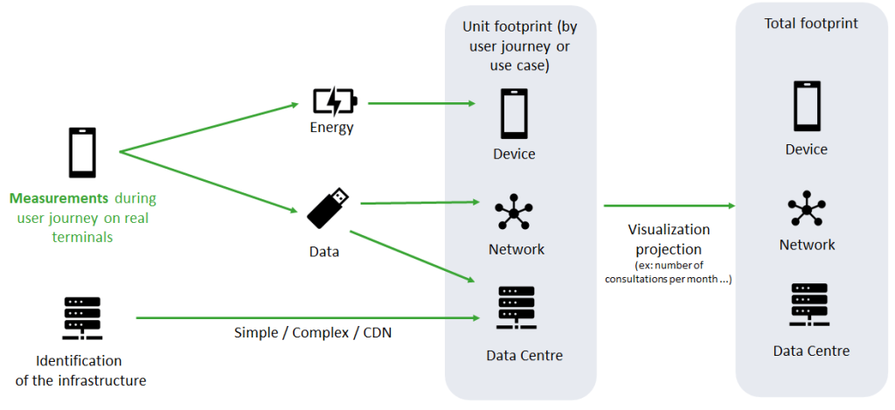
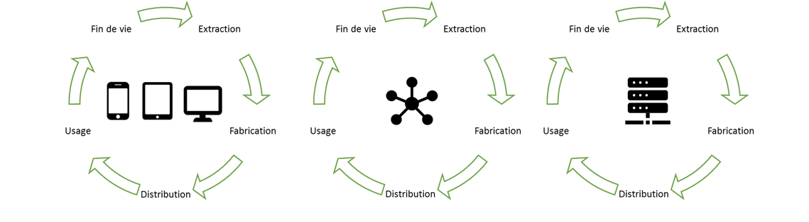
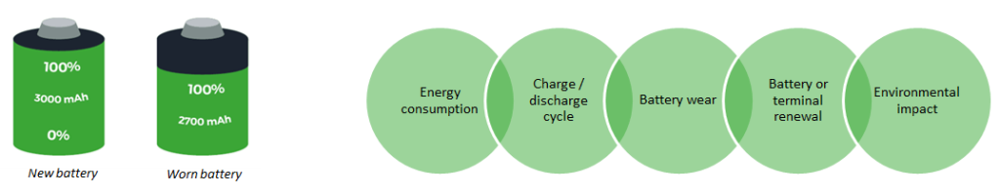
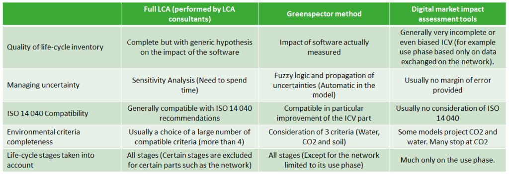
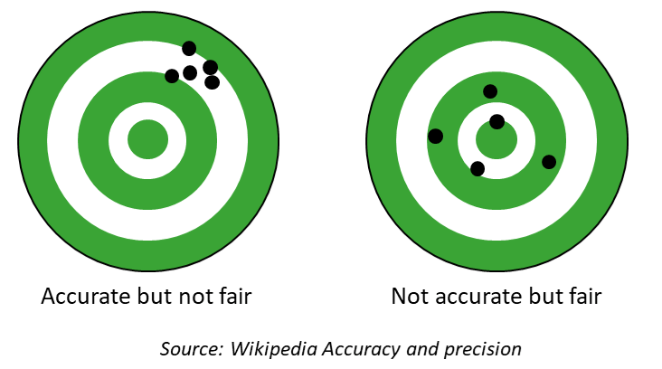

Foreword: Assessing the impact of the use
This note briefly describes the methodology we use at the date of its publication.
Because of our continuous improvement process, we are vigilant in constantly improving the consistency of our measures as well as our methodology for projecting environmental impact data.
We assess the environmental impacts caused by the use of a digital service.
This analysis is based on a Life Cycle Analysis (LCA) method, but it is not about performing the LCA of a digital service.
Such an analysis would be an exercise on a much broader scope, which would include elements specific to the organization that created the software.
In the LCA of a digital service, it would be appropriate, for example, to include for its manufacturing phase: the home-work trips of the project team (internal and service providers), the heating of their premises, the PCs and servers necessary for the development, integration and acceptance, on-site or remote meetings, etc …
Environmental footprint assessment methodology
Our approach
The chosen modelling is based on the principles of Life Cycle Analysis (LCA), and mainly by the definition given by ISO 14040.
It consists of a complete Life Cycle Inventory (LCI) part and a simplified Life Cycle Assessment (LCA). The LCI is predominant in our model. It will ensure that we have reliable and representative data. In addition, the LCI thus obtained can, if necessary, be integrated into more advanced LCAs.
We assess the environmental impact of digital services on a limited set of criteria::

GreenHouse Gas Emissions (GHG)
expressed in g eqCO2,
as commonly used, indicate the intensity of the impact on climate change

Water Resource
expressed in litres,
as defined by the water footprint network, is an indicator reflecting water consumption (blue water) and the number of pollutants used (greywater). It does not take into account the local scarcity of resources, but it is a meaningful indicator.

Land use
expressed in m2,
as originally defined by Heijungs et al. (1992), is a reflection indicator of the impact on biodiversity. It is not the most comprehensive (usually independent of time, but it is the most used currently.
This methodology has been reviewed by the EVEA firm – a specialist in ecodesign and life cycle analyses.
Note on water resource: Greywater and blue water are taken into account at all stages of the life cycle. Green water is added to the manufacturing cycle of terminals and servers. See the definition of the water footprint.
Quality management of results
The quality of LCA results can be modelled as follows1 :
Quality of input data x Quality of methodology = Quality of results
To improve the quality of the input data, we measure the behaviour of your solution on real devices. It helps to limit the models that are potential sources of uncertainty.
To manage the quality of the results, we apply an approach that identifies the sources of uncertainties and calculates the uncertainty of the model. Our method of managing uncertainties uses fuzzy logic and its sets2.
Ultimately, unlike other tools and methodologies, we can provide margins of error in the results we give you. It ensures more peaceful communication of the environmental impact to stakeholders (users, internal teams, partners, etc.)
1Quality of results: SETAC (Society of Environmental Toxicology and Chemistry 1992)
2Although often mentioned in the literature dealing with uncertainties in LCA. This approach is little used. Indeed, stochastic models such as Monte Carlo simulations are often preferred (Huijbregts MAJ, 1998). In our case, the use of fuzzy logic seems more relevant because it allows us to deal with epistemic inaccuracies, especially due to expert estimates.
Calculation steps

Phases taken into account for the equipment used

Note on the impact model of the terminal part
Classical impact analysis methodologies assume a uniform impact on the software (average consumption regardless of the software or the state of the software). Our innovative approach makes it possible to refine this impact. In addition, we are improving the modelling of the software impact on the hardware manufacturing phase by accounting for battery wear.
The battery of smartphones and laptops is consumable. We model the impact of the software on it.

Input data for the Life-Cycle Inventory
Measured data
Energy consumed on a smartphone
Data exchanged on the network
Requests processed by the server
Modelled data
Energy consumed on tablet and PC
Energy and resources consumed on the server
Energy and resources consumed on the network
Terminal Assumptions
Impact of smartphone manufacturing
Impact smartphone battery manufacturing
Tablet battery manufacturing impact
PC battery manufacturing impact
Max number of cycles before smartphone wear
Max number of cycles before wear Shelf
Max number of cycles before wear Shelf
Average smartphone battery capacity
Average tablet battery capacity
Average PC battery capacity
Battery voltage
Smartphone lifespan
Tablet life
PC life
Battery replacement vs smartphone change ratio
The ratio of battery replacement vs tablet replacement
Battery replacement vs PC change ratio
Reference discharge speed on the terminal (measured)
Assumptions Servers
Server power
Of cores
Data centre PUE
Power by heart
Server time (TTFB)
Number of max requests per second
Power per request
Number of cores per VM
Number of VMs per simple app
Number of VMs per complex app
Impact Manufacturing Server
Server lifetime
CDN Debit
Energy assumptions
World average electricity emission factor
Electricity emission factor France
Example of work on hypotheses:
The methodology of propagation of uncertainties requires us to identify precisely the quality of these assumptions. Here are a few examples, in particular the impact of material manufacturing.
The bibliographic analysis allows us to identify the impacts of different smartphones, and to associate the DQI confidence index. These figures mainly come from the manufacturers.
The average impact calculated from these confidence indices is 52 kg eq Co2 with a standard deviation of 16 kg.

Example of restitution
- In this example: the median impact of 0.14g eqCO2 is mainly on the ‘Network’ part.
- This impact corresponds to viewing a web page for 20s
- Uncertainty is calculated by the Greenspector model by applying the principle of propagation of uncertainties from the perimeter and assumptions described above.

Necessary elements
To determine the impact of your solution, we need the following information:
- Smartphone / Tablet / PC viewing ratio
- France / World visualization ratio
- Location of France / World servers
- Simple or complex servers (or number of servers in the solution)
On this estimate, we can carry out a simplified LCA based on this model but adapting other elements to counter particular circumstances. For example:
- Measurement of the energy consumption of the server part (via a partner)
- Accuracy of server assumptions (PUE, server type)
- Measurement of the PC part (via laboratory measurement)
- Accuracy of the electrical emission factors of a particular country…
Comparison of estimation models

Greenspector calculations are integrated into a web service currently used by our customers. Very soon, find our calculations of the environmental footprint of your mobile applications and websites in a SaaS interface.
Comparison of estimation models
Calculation methods in digital sobriety are often not very accurate and sometimes, at the same time, not very faithful. It potentially leads you to use tools that poorly assess the impact of your solutions. The risk is to make your teams work on areas that have no real impact on the environment.
Some approaches, more used in LCAs (and not in market tools), improve fidelity but pose a risk of giving an unfair result (R. Heijungs 2019).
Our approach is based on an innovative computational method, fuzzy arithmetic, first proposed by Weckenmann et al. (2001).
This approach is very efficient for modelling vague (epistemic) non-probabilistic data, which is often the case of data dealing with digital sobriety. In this way, we aim for accurate and faithful results.

Rival solutions make choices that generally make them inaccurate and unreliable:
- Fidelity: Poor control of the environment, no methodology for managing measurement deviations
- Accuracy: Model-based on non-representative metrics such as data consumption or DOM size, no energy measurement…